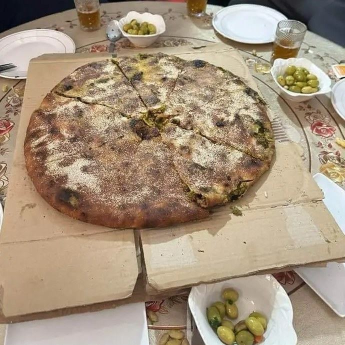
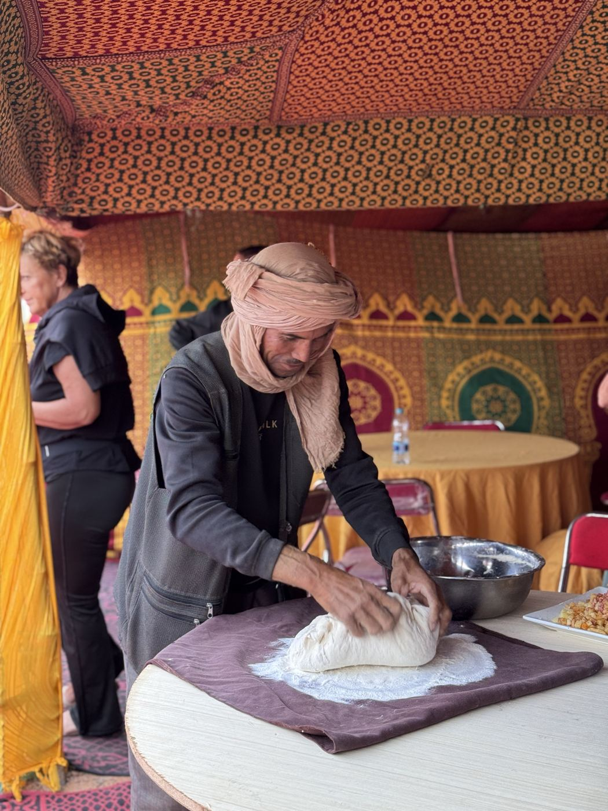
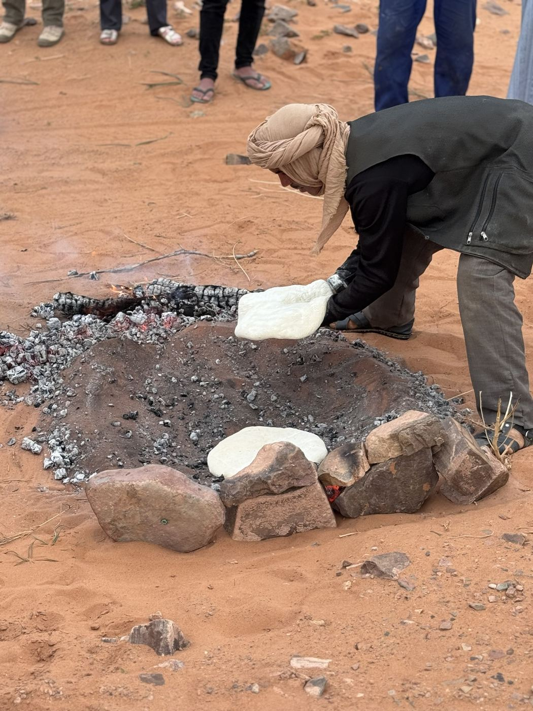

Travellers call it the “Berber pizza” or the “Sahara pizza”. In the oases of the Tafilalet it is simply medfouna: a large round bread stuffed with spiced meat, onions and herbs, and baked buried in the hot sand next to a fire. It is one of the most surprising dishes of Morocco, and one of the best things you can eat during a trip to the desert.
We live in Erfoud, in the heart of the medfouna country, and we share it with our guests on almost every desert tour. In this guide we explain where it comes from, what goes inside, how it is cooked step by step, how it tastes and where you can try it.

What is medfouna?
The word medfouna (also written madfouna) means “buried” in Arabic. The name comes from the traditional way of cooking it: the bread is buried in sand heated by a wood fire, and the heat of the sand and the embers bakes it slowly from every side.
It looks like a big flat pie, often 30 to 40 cm across, golden on the outside and full of a juicy, fragrant filling. It is not really a pizza: there is no tomato sauce and no cheese. The filling is closed inside the dough, so it is closer to a stuffed bread or a large calzone. But the comparison helps visitors understand, and the nickname “Berber pizza” has stuck.
Where does it come from?
Medfouna is the signature dish of the Tafilalet, the great palm oasis of the Ziz Valley around Rissani, Erfoud and Merzouga, in the south-east of Morocco. Families here have cooked it for generations. It was a practical meal for people who lived between the oases and the desert: bread and filling in one dish, cooked with the simplest tools possible, a fire and the sand.
Today you find it in the restaurants of Rissani, Erfoud and Merzouga, but the best medfouna is still the one baked in the sand in front of you, in a camp or at a family’s home.
What is inside?
Every family has its own recipe, but a classic medfouna contains:
- Minced meat: beef or lamb, sometimes camel in the desert villages.
- Onions, finely chopped, which melt and give sweetness.
- Fresh herbs: parsley and coriander.
- Spices: cumin, sweet paprika, black pepper, a little hot pepper and salt.
- Sometimes eggs, almonds or a little animal fat for extra flavour.
There is also a vegetarian version with onions, peppers, tomatoes, eggs and herbs. If you do not eat meat, tell us when you book and we will ask for it.
How medfouna is made, step by step

1. The dough
A simple bread dough of flour, water, yeast and salt is kneaded by hand for a long time, until it becomes soft and elastic. It is left to rest while the fire is prepared.
2. The fire
A fire of dry wood, often palm or tamarisk, is lit directly on the sand. It burns for about an hour, until only glowing embers remain and the sand underneath is very hot.
3. The filling
The dough is divided in two and spread into two large discs. The filling is spread over the first disc, the second disc covers it, and the edges are pinched together to close it well.

4. Buried in the sand
The embers are pushed aside, the medfouna is laid on the hot sand, then covered with more hot sand and embers. After about 15 to 20 minutes it is turned over and covered again. In total it bakes for about 30 to 40 minutes.
5. Cleaned and shared
The cook lifts it out, taps and brushes off the sand, and the crust comes out golden and clean. It is cut into slices like a cake and shared immediately, still hot, usually with mint tea and olives.
Does it taste of sand?
No. The outer crust protects the bread, and the cook removes all the sand before serving. What you taste is a crispy, smoky crust and a soft, juicy filling.
How does it taste?
Imagine a bread with a crisp, slightly smoky crust, and inside a juicy filling where the spices, the onions and the herbs have cooked slowly with the meat. It is generous, warming and very satisfying, perfect after a morning in the dunes. One medfouna is usually enough for three or four people.
Where to eat medfouna
- In the desert: the most memorable experience is to watch it baked in the sand, in a camp or at a nomad family. We include it on many of our desert days, depending on availability.
- In Rissani: the town is famous for its medfouna, sold in small restaurants around the market. Some bakers cook it in wood ovens.
- In Erfoud and Merzouga: many restaurants and guesthouses prepare it, usually to order. Ask a few hours in advance, as it takes time.
Discover other local dishes in our guide to Moroccan food.
Taste medfouna on our desert tours
Medfouna is part of the experience on our tours to Merzouga. On the day around the dunes, we often stop for a medfouna lunch, together with visits to Khamlia and a nomad family. See our 3-day desert tour from Marrakech, the 3-day Sahara tour from Fes, and all our desert tours. It is also part of our New Year in the Sahara programme. Read more about things to do in Merzouga.
Frequently asked questions
Why is medfouna called the Berber pizza?
Because it is round and flat and cut into slices like a pizza. Travellers gave it this nickname, but it has no tomato sauce or cheese: it is a stuffed bread baked in the sand.
What does medfouna mean?
It means “buried” in Arabic, because it is cooked buried in hot sand and embers.
Is there a vegetarian medfouna?
Yes. It can be filled with onions, peppers, tomatoes, eggs and herbs. Just ask in advance.
How long does it take to cook?
About 30 to 40 minutes in the sand, plus around an hour to prepare the fire and the dough. That is why restaurants usually ask you to order in advance.
Where is the best medfouna?
In the Tafilalet, around Rissani, Erfoud and Merzouga, and above all baked in the sand in front of you during a day in the desert.
Keep reading: Things to do in Merzouga · Khamlia and Gnawa music · Moroccan food guide